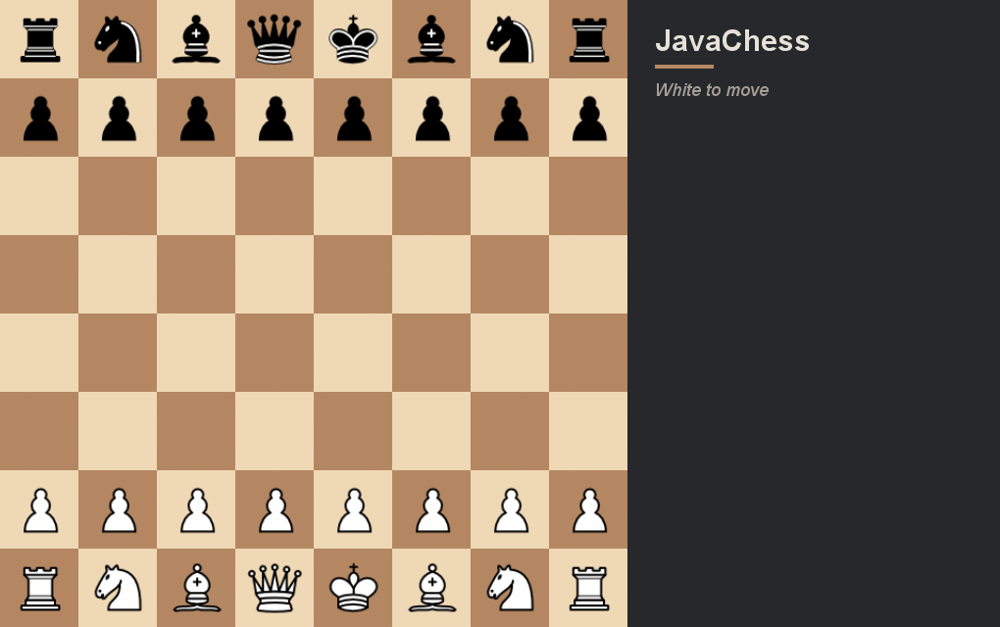

Play in your browser
Runs the actual Java app in your browser via CheerpJ (WebAssembly). The first launch downloads the runtime, so give it a moment. Best on a desktop browser.
Demo

Features
- Negamax search with alpha-beta and principal variation search, a transposition table, null-move pruning, late-move reductions, killer and history move ordering, check extensions, and a quiescence search.
- Evaluation with tapered piece-square tables, mobility, pawn structure, king safety, and an endgame term that drives a lone king to the edge.
- Full rules: castling, en passant, promotion, the 50-move rule, threefold repetition, and insufficient-material draws.
- Opening book, UCI support for chess GUIs like Arena and CuteChess, and a move list in algebraic notation with undo and redo.
Run it locally
You need Java 17 or newer. From the project's src folder:
javac *.java java ChessGUI
Source and instructions are on GitHub.